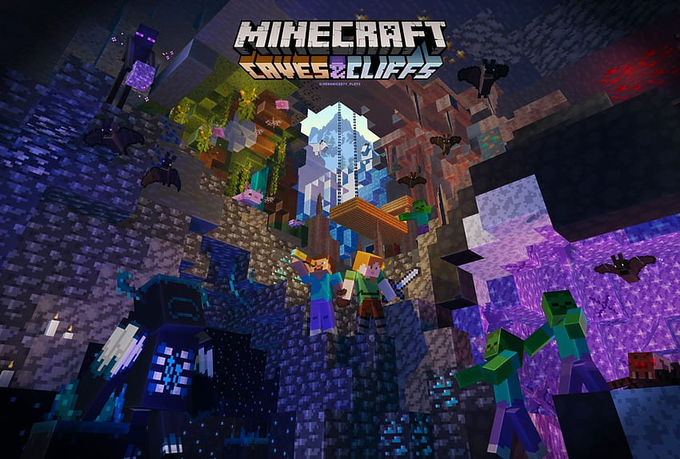
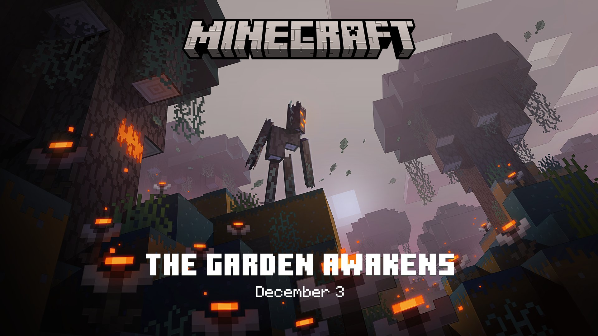
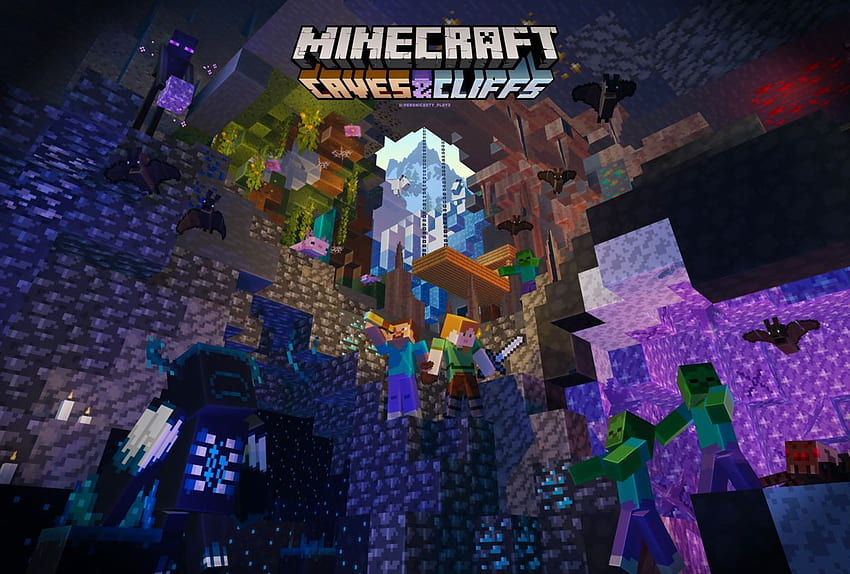
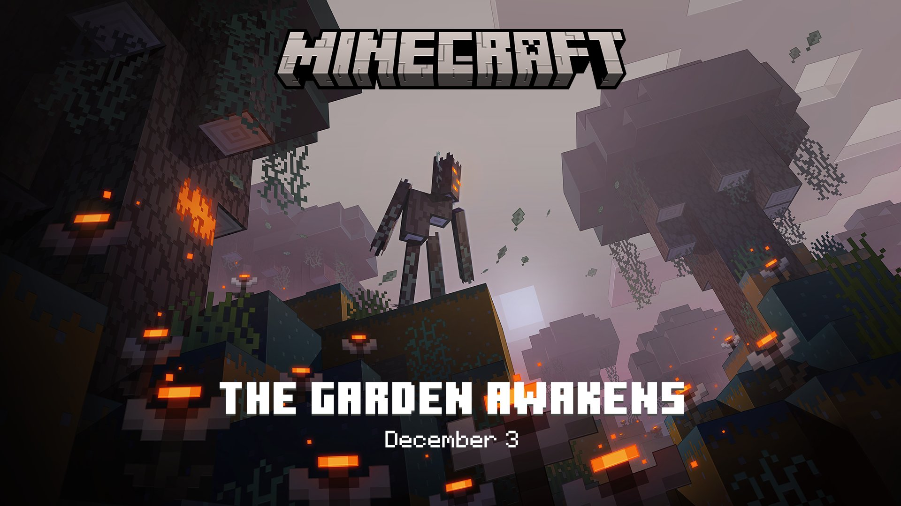

ゲーム
個人的に好きなゲームたちです。星のカービィ
『星のカービィ』（ほしのカービィ、英題: Kirby's Dream Land）は、1992年4月27日に任天堂より発売されたゲームボーイ用の横スクロールアクションゲーム。開発元はハル研究所（表記は「HAL研究所」）。
丸い体に手足がついたキャラクター「カービィ」を操作するアクションゲーム『星のカービィ』シリーズの第1作目。カービィは敵などを吸い込む能力と空を飛ぶ能力を持っており、これらを駆使してステージクリアを目指す。なお、敵を吸い込むことで新たな力を得るというシリーズ定番の「コピー能力」は本作には無い。登場するのは次回作の『星のカービィ 夢の泉の物語』からである。
発売当時放映されたCMは、少年が絵描き歌を歌いながらカービィを描き終えると、絵の中のカービィが少年を吸い込み、次のシーンでは吐き出された少年が星にはまってカービィの名前を叫ぶ、という内容であった。
後に発売された『星のカービィ スーパーデラックス』と『星のカービィ ウルトラスーパーデラックス』の中で、本作のリメイク版が「はるかぜとともに」のタイトルで収録されている。ただし、一部のステージ構成が異なっていたり一部のアイテムがなくなっていたりするなど、原作といくつかの違いがある。
また、『星のカービィ 夢の泉の物語』およびそのリメイク版『星のカービィ 夢の泉デラックス』の最終ステージは、本作のステージを繋ぎ合わせた構成になっている。

スプラトゥーン
スプラトゥーンシリーズ（英: Splatoon Series）は、任天堂が開発、発売しているコンピュータゲームシリーズである。略称はスプラ。
プレイヤーはヒトの姿に変身できるイカ（もしくはタコ）を操作し、ヒトの姿でインクを様々なブキを使って塗り、塗ったインクの中をイカやタコの姿で泳ぐ。そして4対4に分かれて地面を塗り合い、塗った面積を競う「ナワバリバトル」がゲームの中心となる。
作品タイトルは、英語で［ splat（スプラット；ピシャッという音。液体や柔らかい固体が固体の表面に衝突する際の鋭く無調な音）+ platoon（プラトゥーン；小隊）］という構成になっている造語である。
2015年5月28日に第1作『スプラトゥーン』が発売する。その後2017年7月21日に第2作『スプラトゥーン2』が、2022年9月9日に第3作『スプラトゥーン3』が発売された。
.jpg) 



Minecraft
『Minecraft』（マインクラフト）は、2011年に発売されたサンドボックスビデオゲームであり、マルクス・ペルソン（Notch）によって開発された。日本国内では「マイクラ」と略される。
Minecraftは、Javaプログラミング言語を使用して制作され、最初のアルファ版が2009年5月17日に公開された。その後、ゲームは継続的に開発され、2011年11月18日に正式リリースを迎えた。リリース後、ペルソンはMojang Studiosを離れ、開発はイェンス・バーゲンステン（Jeb）に引き継がれた。そして、さまざまなプラットフォームに移植されている。
2014年には、MojangおよびMinecraftの知的財産がマイクロソフトによって25億米ドルで買収された。当時の販売本数が6000万本となったことで「世界で最も売れたインディーゲーム」としてギネス世界記録に認定され、2023年10月時点では売り上げが3億本を突破している。また、2020年には世界ビデオゲームの殿堂に選ばれている。
Minecraftは史上最も売れたゲームであり、2025年時点で3億5000万本以上を販売し、月間アクティブプレイヤーは約1億7000万人に達している。また、数々の賞を受賞し、史上最高のビデオゲームの一つとされて高い評価を得ている。ソーシャルメディア、パロディ、アダプテーション、マーチャンダイズ、年次Minecon大会も本作の人気に大きく寄与している。Minecraftは教育現場でも利用され、化学、CAD、計算機科学の指導に役立てられている。本作はシリーズも展開しており、『Minecraft: Story Mode』、『Minecraft Earth』、『Minecraft Dungeons』、『Minecraft Legends』など複数のスピンオフゲームが生まれている。実写映画化作品『マインクラフト／ザ・ムービー』は2025年4月4日に劇場公開された。
Minecraftには、主に「Minecraft: Java Edition」（JE、Java版）、「Minecraft: Bedrock Edition」（BE、統合版）という2つのエディションが存在する。基本的には、プレイヤーはこれらのうちどちらかのエディションを選択してプレイすることになる。ソフトウェアのプログラミング言語は、それぞれJava、C++である。